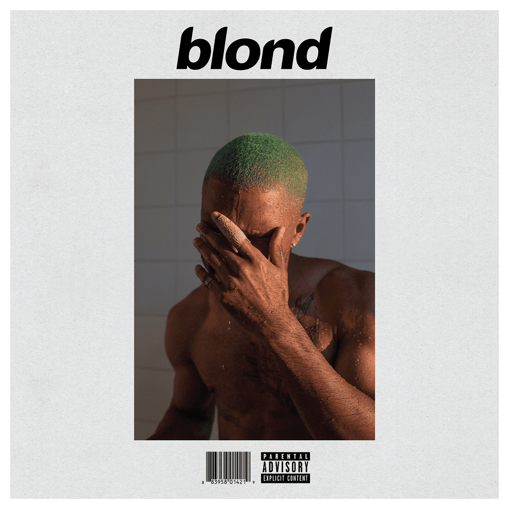

⋆.˚✮🎧✮˚.⋆ ✩♬ ₊˚.🎧⋆☾⋆⁺₊✧ ‧₊˚🖇️✩ ₊˚🎧⊹ ♡ ⋆｡‧˚ɞ˚‧｡⋆.ೃ࿔*:


Sobre mim ✩°｡⋆⸜ 🎧✮
Olá, me chamo Luane Kasprzak e atualmente estou na reta inicial do curso de graduação, Sistemas de Informação. Não sou alguém muito criativa, porém decidi me juntar ao mundo da programação, lugar separado para nós introvertidos!
Ainda me encontro meio indecisa de qual caminho seguir na programação, mas espero me identificar com algo que me deixe animada e motivada em trabalhar com... Meu maior medo é passar os restos dos anos fazendo algo totalmente entediante e desmotivador!
Índice
Favoritos
Cinema:
Música do mês:
▶︎ •၊၊||၊|။||||။၊|• 0:10 ---------------- Pink + White

ESCOLARIDADE
Ensino infantil - Ensino médio [2012-2023]
- Durante o Ensino médio no SESI, desenvolvi uma base sólida em nas disciplinas básicas, mas também me interessei em participar de atividades extracurriculares e eventos da escola, como cursos de Robótica e Informática. Por meio deste contato, foi se criando em mim uma curiosidade ainda maior em cursar alguma graduaçao voltada para programação.
Ensino superior [2024 - ]
-
Minha jornada no curso de Sistemas de Informação pela UNOESTE ainda é recente, porém desejo adquirir uma sólida base nas principais áreas de estudo. Tenho interesses também em participar de projetos, pesquisas, estágios, para agregar no meu futuro currículo e experiências, assim desenvolvendo competências específicas, que são fundamentais para a minha atuação profissional.
Ensino técnico [2022 - 2023]
-
Sou Técnica em Eletroeletrônica pelo SENAI, realizei o curso ainda quando estava no ensino médio e por mais cansativo que fosse era uma realização me formar em um dos poucos cursos que me interessava. Atualmente, vejo a importância dessa experiência na minha vida profissional, já que o curso técnico me abriu oportunidades e até mesmo conhecimentos ofertados no meu curso de graduação.
CARREIRA
Primeira experiência [2024]
Minha primeira experiência profissional aconteceu a partir do primeiro semestre da faculdade. Um estágio que vincula atividades que acumulei do meu curso técnico e faculdade. Ainda que não seja minha área de atuação desejada, estou aprendendo muito em como expandir meus conhecimentos e espero que a partir deles eu possa ter melhores oportunidades de atuação.
HOBBIES
Cinema
-
Tenho uma grande paixão por cinema, o que me leva a explorar uma ampla variedade de gêneros e estilos cinematográficos. Acompanhando essas obras, o meu interesse em analisar e discutir a narrativa, os temas e os elementos técnicos que compõem uma obra cinematográfica só cresceu. Por esse motivo, participo de forúns de crítica para ler e expor o que penso. Essa prática me ajudou a aprimorar minhas habilidades de pensamento crítico e análise, além de aprofundar minha compreensão sobre a influência cultural e social do cinema no cotidiano. Por mais que eu ame criticar obras que não me agradam ou que realmente são pobres trabalhos, ainda sim tenho alguns deslizes por gostar de obras não tão aclamadas pelo público e críticos de cinema.
Leitura
-
Gosto muito de ler e tenho bastante facilidade em escrever, por isso não poderia deixar de falar do meu interesse em livros. Para falar a verdade, não costumo me aventurar muito em livros de diferentes gêneros e estilos, os livros de romance e que se passam em épocas passadas tem meu coração. Amo acompanhar a história imaginando os cenários e personagens, mas o que mais amo é dar meu feedback sobre a leitura em forúns. A leitura não só me proporciona prazer, mas também amplia meu conhecimento e vocabulário, além de estimular meu pensamento crítico e habilidades sociais. Possuo algumas certificações relacionadas á redação e escrita e tenho clara certeza que esse hábito de leitura influenciou nessas minhas habilidades. Livros sobre problemas e consciências sociais vem se tornando alguns dos meus interesses atualmente, vamos ver se irei gostar!
Músicas
-
A música tem uma influência muito grande em mim, desde pequena gostava de cantar e até fui convidade algumas vezes para cantar em eventos escolares... Por mais que tenha sido por pura pressão. Ainda sim, ouvir música consome 100% do meu dia, posso estar ouvindo a mesma música por meses mas ainda continua o mesmo sentimento. Para falar a verdade tem até algumas músicas que evito escutar por me fazerem lembrar de momentos noltálgicos e que me farão sentir saudadas de tais situações, assim para evitar momentos humilhantes (choro) procuro passar para a próxima música. Mas ainda nessas situações consigo perceber o poder que a música tem, em unir momentos e sentimentos de uma vez só.